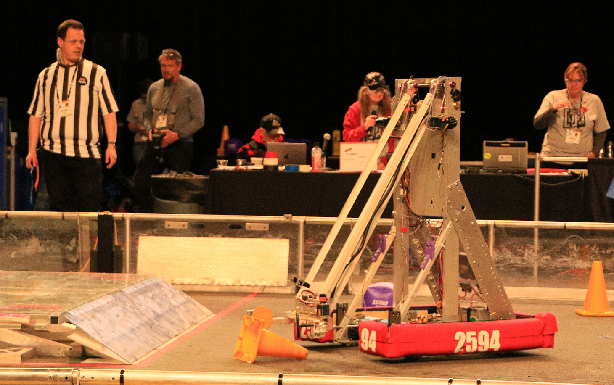

Robotics
FIRST
I have been on team 2594 Naskcorpions for 3 years now. Naskco is a team within the FIRST Robotics Competition. I have worked my way up from an entry position to the programing team leader. I have acquired many practical skills such as teamwork, project management, teaching, curiculum building, and much more. Our code was Java based. We had multiple alorgithms running at once to make the robot work. Overall this is were most of my experience was acquired.
SkillsUSA
Last year my partner and I competed in SkillsUSA Urban Search and Rescue and won first place. We received the Gold Medalist award. This was a great experience. We learned about camera systems, designing a versatile robot, and how end effectors can vary depending on the task. This year I was elected Vice President for my high school's chapter.
Enigma Machine in Scratch
"The Enigma machine was a cipher device used by Nazi Germany during World War II." -Google Bard
Give it a try! Slowly type in any word you want. Then hit enter. Now press mode and slide the "Wheel 1" back to 0. Finally type what the machine had previously printed.